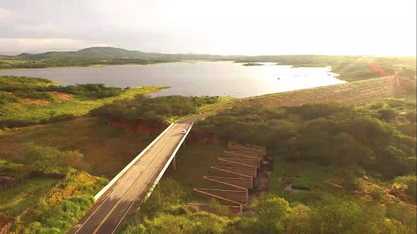

Informações técnicas sobre relevo, população, IDH etc.
| INFORMAÇÕES | |
|---|---|
| Municípios limítrofes | Iguatu , Icó , Lavras da Mangabeira, Várzea Alegre e Cariús |
| Fundação | 21 de outubro de 1920 (100 anos) |
| Área total | 725,786 km² |
| Clima | semi-árido |
| PIB | R$ 81 333,157 mil |
| IDH | 0,627 — médio |
| INFORMAÇÕES TERRITORIAIS | |
|---|---|
| Número de habitantes | 24 527 hab. |
| Superfície de Cedro |
17 164 hectares
171,64 km² (66,27 sq mi) |
| Densidade populacional | 68,8 ha./km² |
| Altitude de Cedro | 528 metros de altitude |
| Coordenadas geográficas decimais |
Latitude:
-7.72109
Longitude: -39.2271 |
| Coordenadas geográficas sexagesimais | Latitude: 7° 43' 16'' Sul , Longitude: 39° 13' 38'' Oeste |
| INFORMAÇÕES DO MUNICÍPIO | |
|---|---|
| Endereço da Prefeitura Municipal de Cedro |
Cedro
Prefeitura de Cedro
Rua Sete de Setembro, 68 Cedro - CE, 63400-000 Brasil |
| Telefone da prefeitura |
não disponível
não disponível |
| Fax |
não disponível
não disponível |
| Endereço electrónico da prefeitura |
não disponível
|
| Site oficial do município | Cedro.ce.gov.br |
| INFORMAÇÕES DO ADMINISTRATIVAS | ||
|---|---|---|
| Prefeito de Cedro | João Batista Diniz | |
| Partido politico | PDT | |
| INFORMAÇÕES DE TRANSPORTE | |
|---|---|
| Transporte urbano disponível | Rodovias Estaduais e Nacionais |
| Aeroporto |
Aeroporto Regional do Cariri 71.9 km
71.9 km
Aeroporto Dix-Sept Rosado
244.5 km
Aeroporto de Picos
277 km
|
| INFORMAÇÕES DE DISTÂNCIA A OUTRAS CIDADES | ||
|---|---|---|
| São Paulo : 2053 km | Rio de Janeiro : 1868 km | Brasília : 1406 km |
| Salvador : 711 km | Belo Horizonte : 1563 km | Manaus : 2357 km |
| Curitiba : 2360 km | Fortaleza : 327 km mais perto | Recife : 489 km |
| Belém : 1195 km | Porto Alegre : 2902 km | Guarulhos : 2031 km |
| Campinas : 2007 km | São Luís : 738 km | Goiânia : 1578 km |
| Distância calculada em linha reta! | ||
Conheça mais sobre a história da Cedro.
As terras da região compreendida entre as serras da Mutuca, de Santa Maria e do Boqueirão, e entre os rios Jaguaribe e Salgado, eram habitados por diversas etnias, entre elas os índios Icó, Icozinho e Quixelô,. Devido à expansão da pecuária no século XVII e da mineração no século XVIII, surgiram fazendas de gado, e uma das maiores foi a Fazenda do Cedro. A cidade de Cedro teve o marco inicial em 1908 com a compra da Fazenda Cedro pelo Cel. João Cândido da Costa, que contava com duas casas: uma localizada no morro e a outra na parte baixa, no meio do carnaubal, onde passou a residir com familiares. A necessidade de intercâmbio entre Crato e Fortaleza favoreceu a construção da estrada de ferro, que muito favoreceu a fazenda, elevando-a a categoria de vila. Em 1915 houve uma seca que assolou o Ceará. Logo após chegou à Fazenda Zabulon uma turma de operários para a construção da ferrovia que hoje liga Fortaleza à Crato, e que teria que passar pela fazenda onde tinha abundância de água para abastecer o pessoal.
Em 15 de Novembro de 1916, a via-férrea ligando Fortaleza à Crato foi inaugurada, em convênio com o governo federal. Neste dia veio a Cedro o ilustre senador João Tomé da Silva, governador do Ceará. Senador João Tomé, bastante comovido com o dinamismo do Cel. João Cândido, elevou o povoamento de Cedro à categoria de vila, pertencente ao município de Várzea Alegre. A partir de então, o povoado de Cedro começa a ter novo impulso. Nos primeiros anos de desenvolvimento surgiu um evidente desejo de independência, conclamando o povoado a lutar cada dia com maior impulso para a transformação da vila em cidade. Pouco a pouco ergueram-se casas, fundaram-se fornecimentos e capelinhas. De início, recebeu o nome de Cedrinho de Açúcar pelos habitantes da época, como um atestado de bondade e atração do lugar. Foi exatamente nesse tempo que o nome do Cel. João Cândido projetou-se rapidamente no anuário da região, atingindo o ápice do prestígio social local por ele ser a única autoridade para resolver todos os casos.
Conta-se que vindo em uma de suas viagem de Roma o patriarca do Juazeiro do Norte, Padre Cícero, acompanhado de sua comitiva, parando na Fazenda Cedro, teve carinhosa acolhida por parte do proprietário e moradores. Passou parte do dia, almoçou e repousou um pouco. Na hora de sua partida, recostado no alpendre da casa grande da fazenda e avistando o carnaubal, disse que ali haveria de nascer um cidade. A notícia da profecia se espalhou rapidamente e a mercê de Deus, e anos mais tarde foi confirmada, com Cedro sendo elevado a cidade.
Saiba mais sobre os melhores lugares e o que fazer em Cedro.
Dentre os poucos pontos turisticos de Cedro o que mais se destaca é o açude Ubaldinho Onde o mesmo é a Principal fonte de água do município e também das cidades vizinhas que dependem bastante desse açude. 
Veja como chegar nos melhores pontos de Cedro
Essas rotas servem apenas para fins de planejamento. Obras, trânsito intenso, fatores climáticos ou outros eventos podem fazer com que as condições sejam diferentes dos resultados no mapa, por isso é preciso planejar o trajeto levando tudo isso em conta. Obedeça a todas as sinalizações ou avisos que aparecerem em seu trajeto.